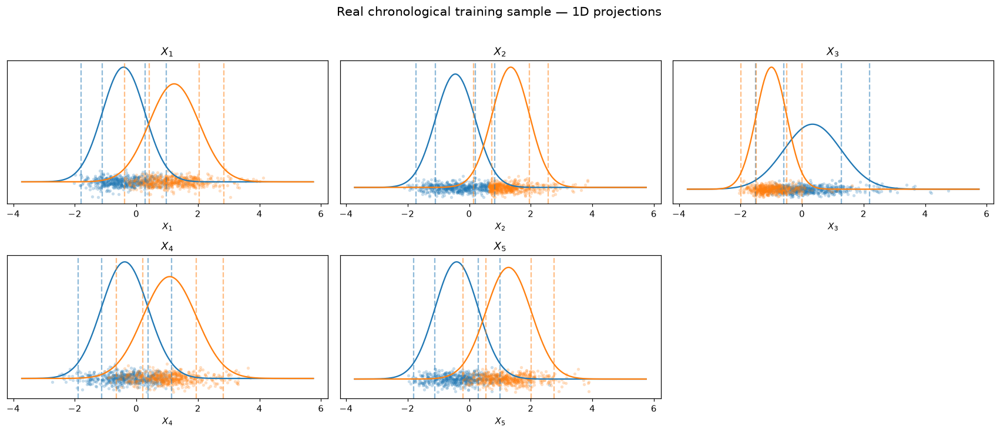
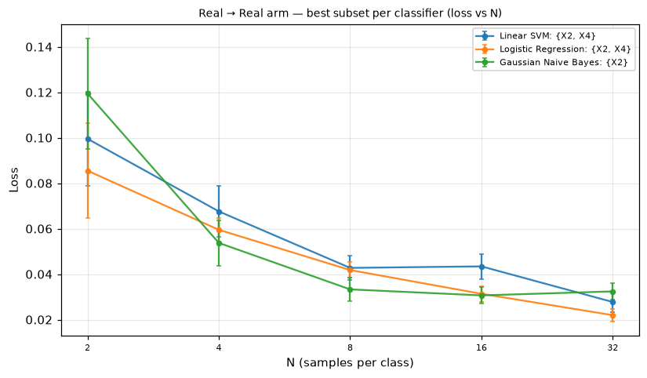
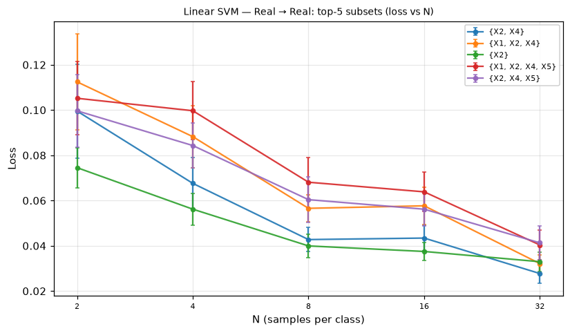
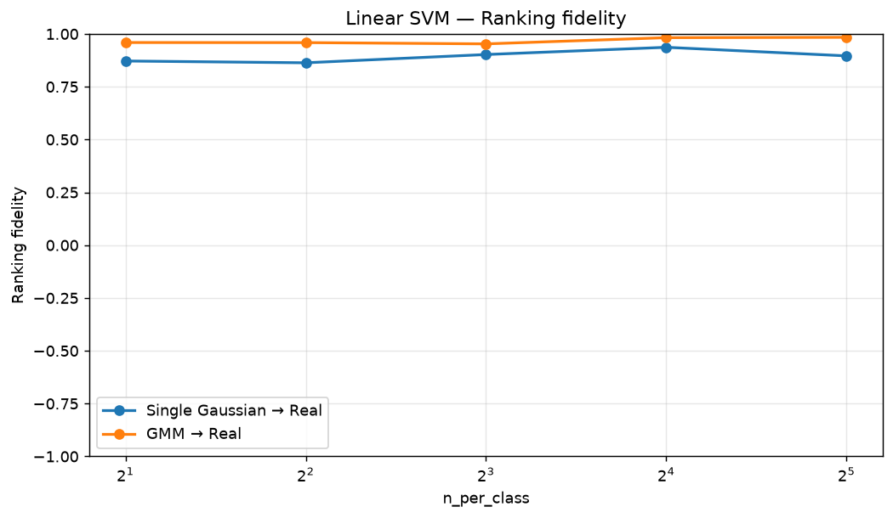
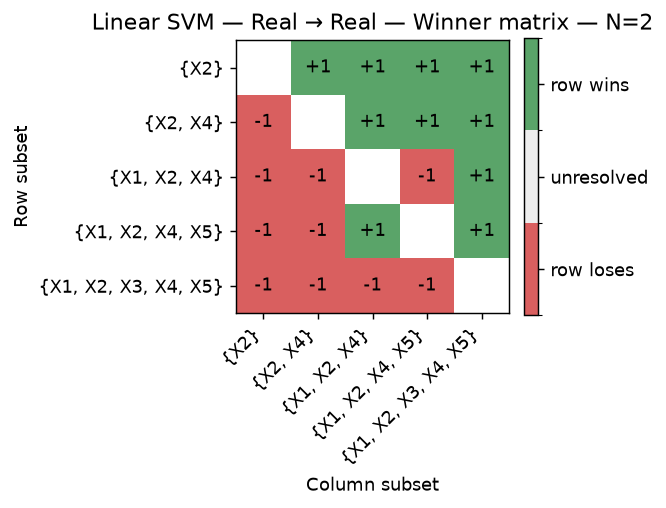
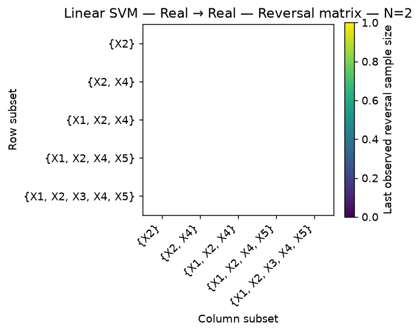

Which training distribution best preserves the cooperative channel-subset structure observed on the fixed future real UCI Air Quality test set: real training data, single-Gaussian synthetic data, or GMM synthetic data?
| Scenario run ID | 3 |
|---|---|
| Scenario family | dataset |
| Scenario mode | smoke |
| Dataset | UCI Air Quality |
| Target | Positive when C6H6(GT) >= the training-only 75th-percentile threshold (14.5); C6H6(GT) is excluded from classifier input |
| Main arms | Real → Real; Single Gaussian → Real; GMM → Real |
| Real training source | chronologically first 80% complete-case Air Quality training pool, standardized using training-only means and population standard deviations |
| Number of channels | 5 |
| Non-empty channel subsets | 31 |
| Classifiers | Linear SVM, Logistic Regression, Gaussian Naive Bayes |
| Metric | Empirical test loss (0–1 misclassification) |
| Sample sizes | [2, 4, 8, 16, 32] |
| Largest evaluated sample size | N = 32 samples per class |
| Evaluation split | fixed future real Air Quality test set (chronologically last 20%) |
Classifiers: Linear SVM, Logistic Regression, Gaussian Naive Bayes. Detailed classifier configuration was not recorded for this historical result.
Balanced training samples come from the chronologically first 80% real training pool and are evaluated on the unchanged fixed future real test set.
One Gaussian per threshold-defined class is fitted only on the real training pool; synthetic balanced training samples are evaluated on the unchanged fixed future real test set.
A BIC-selected Gaussian mixture per threshold-defined class is fitted only on the real training pool; synthetic balanced training samples are evaluated on the unchanged fixed future real test set.
All three main arms are evaluated on the same fixed future real Air Quality test set (chronologically last 20%).
| Parameter | Value |
|---|---|
| Minimum replications | 10 |
| Maximum replications | 40 |
| Replication batch size | 5 |
| CI target (95% half-width) | 0.0500 |
| Stopping criterion | Stop when the maximum 95% CI half-width across all (subset, classifier) cells falls at or below the CI target, or when the maximum replications budget is reached. |
| Visualization sample size | 1024 |
|---|---|
| Class balance | balanced (equal samples per class) |
| Real-data source | standardized Air Quality training reservoir |
| Single Gaussian synthetic training source | single Gaussian model |
| GMM synthetic training source | class-conditional Gaussian mixture models |
| Visualization seed | 20240501 |

Largest evaluated sample size: N = 32 samples per class.
| Classifier | Real → Real best subset | Real → Real loss | Single Gaussian → Real best subset | Single Gaussian → Real loss | GMM → Real best subset | GMM → Real loss | SG same as real | GMM same as real |
|---|---|---|---|---|---|---|---|---|
| Linear SVM | {X2, X4} | 0.0277 | {X2} | 0.0231 | {X2, X4} | 0.0272 | no | yes |
| Logistic Regression | {X2, X4} | 0.0220 | {X2} | 0.0246 | {X2, X4} | 0.0285 | no | yes |
| Gaussian Naive Bayes | {X2} | 0.0324 | {X2} | 0.0242 | {X2} | 0.0312 | yes | yes |

Subsets are ranked by empirical test loss at the largest evaluated N = 32 samples per class.
| Rank | Subset | Loss | SE |
|---|---|---|---|
| 1 | {X2, X4} | 0.0277 | 0.0043 |
| 2 | {X1, X2, X4} | 0.0321 | 0.0040 |
| 3 | {X2} | 0.0330 | 0.0042 |
| 4 | {X1, X2, X4, X5} | 0.0404 | 0.0065 |
| 5 | {X2, X4, X5} | 0.0413 | 0.0076 |

This section assesses predictive cooperation profile agreement across arms with four separate metrics. Ranking fidelity compares complete subset rankings using Spearman correlation with average-rank tie handling. Winner Agreement compares effective pairwise winner relations, carried forward through exact ties, after excluding pairs still unresolved in either arm. Reversal existence agreement compares which unordered pairs have a valid last observed winner reversal; reversal sample-size similarity compares the reversal sample sizes only for the pairs shared between the two arms. These metrics remain separate; no composite index is reported.
constant_ranking means a non-reference ranking has no variation; no_valid_pairs means every unordered pair was unresolved in at least one arm; unavailable_first_prefix marks N1; no_reversals_in_either and no_shared_reversals distinguish empty reversal cases; ok means the corresponding metric is available.
| Classifier | Comparison arm | rho_rank(Nmax) | Ranking status | A_W(Nmax) | Valid winner pairs | Skipped tie pairs | Winner status | A_R(<=Nmax) | S_R(<=Nmax) | Reference reversal pairs | Arm reversal pairs | Shared reversal pairs | Union reversal pairs | Mean log2 reversal distance | Reversal status |
|---|---|---|---|---|---|---|---|---|---|---|---|---|---|---|---|
| Linear SVM | Single Gaussian → Real | 0.8960 | ok | 0.8839 | 465 | 0 | ok | 0.3230 | 0.7163 | 65 | 148 | 52 | 161 | 1.1346 | ok |
| Linear SVM | GMM → Real | 0.9839 | ok | 0.9548 | 465 | 0 | ok | 0.4732 | 0.7453 | 65 | 100 | 53 | 112 | 1.0189 | ok |
| Logistic Regression | Single Gaussian → Real | 0.9665 | ok | 0.9376 | 465 | 0 | ok | 0.4722 | 0.8088 | 52 | 107 | 51 | 108 | 0.7647 | ok |
| Logistic Regression | GMM → Real | 0.9951 | ok | 0.9785 | 465 | 0 | ok | 0.5312 | 0.7500 | 52 | 46 | 34 | 64 | 1.0000 | ok |
| Gaussian Naive Bayes | Single Gaussian → Real | 0.9868 | ok | 0.9613 | 465 | 0 | ok | 0.5504 | 0.8169 | 194 | 206 | 142 | 258 | 0.7324 | ok |
| Gaussian Naive Bayes | GMM → Real | 0.9898 | ok | 0.9677 | 465 | 0 | ok | 0.4721 | 0.8591 | 194 | 149 | 110 | 233 | 0.5636 | ok |

The Winner matrix W shows who currently wins each unordered subset pair at a given sample size; the Reversal matrix R shows when that pair last changed winner through the selected prefix. The direction and new winner after a reversal are recovered from W, not stored separately in R. R stores exactly one upper-triangular value per unordered pair. The fixed display subset reduction below does not alter the all-subset numerical metrics reported above.
Fixed Real → Real display subsets selected at Nmax: {X2}, {X2, X4}, {X1, X2, X4}, {X1, X2, X4, X5}, {X1, X2, X3, X4, X5}


N is the first evaluated sample size, so no reversal can yet exist: the Reversal matrix is empty.
Ranking fidelity, Winner Agreement, reversal existence agreement, and reversal sample-size similarity measure separate properties and are interpreted separately alongside their availability statuses.
Agreement in best subsets and reversal fidelity indicates that a fitted synthetic training distribution preserves structure expressed on the same future real test set.
Closer GMM alignment with Real → Real suggests that multimodal class-conditional structure matters for synthetic-to-real transfer.
Differences identify channel-subset relationships in the real training distribution that a fitted synthetic distribution does not reproduce on future real observations.
Linear SVM, Logistic Regression, and Gaussian Naive Bayes can rank the same 31 subsets differently, so comparisons are classifier-specific.